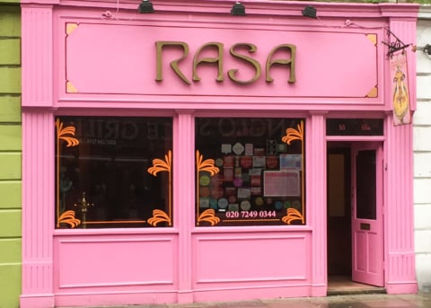

222 Vegan Cuisine Posted on 28th July 201620th October 2017 by Kate Flagg Vegan gfo Restaurant ££ British, EuropeanWest Kensington, Hammersmith and Fulham
Carnevale Posted on 22nd October 201624th September 2017 by Kate Flagg Vegetarian vo gfo Restaurant £££ MediterraneanWhitecross Street, Islington
Ethos Posted on 6th September 201624th September 2017 by Mark Mitchell Vegetarian vo gfo Restaurant £££ InternationalFitzrovia, City of Westminster
Hackney Downs Vegan Market Posted on 24th August 201724th September 2017 by Mark Mitchell Vegan gfo Market stall ££ Cakes & Baking, InternationalHackney Downs, Hackney
Manna Posted on 22nd October 201624th September 2017 by Mark Mitchell Vegan gfo Restaurant £££ InternationalPrimrose Hill, Camden
Mildreds Camden Posted on 3rd October 201624th September 2017 by Mark Mitchell Vegetarian vo gfo Restaurant ££ InternationalCamden Town, Camden
Mildreds Kings Cross Posted on 12th September 201624th September 2017 by Mark Mitchell Vegetarian vo gfo Restaurant ££ InternationalKing's Cross, Islington
Mildreds Soho Posted on 3rd October 201624th September 2017 by Mark Mitchell Vegetarian vo gfo Restaurant ££ InternationalSoho, City of Westminster
 Rasa N16 Posted on 30th October 201624th September 2017 by Mark Mitchell Vegetarian vo gfo Restaurant ££ Indian, South IndianStoke Newington, Hackney
Sagar (Covent Garden) Posted on 24th August 201728th November 2017 by Mark Mitchell Vegetarian vo gfo Restaurant ££ Indian, South IndianCovent Garden, City of Westminster
Tanya’s Posted on 6th September 201624th September 2017 by Kate Flagg Vegan gf Restaurant £££ InternationalChelsea, Kensington and Chelsea
The Gallery Cafe Posted on 6th September 20161st January 2018 by Kate Flagg Vegan gfo Cafe ££ InternationalBethnal Green, Tower Hamlets